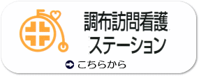
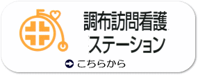

最終更新日 令和3年12月28日

問診票
当院では、初診の患者様には診療の前に問診票をご記入いただいております。
問診票をご記入の上、ご持参いただければ待ち時間の短縮等につながります。
受診される診療科の問診票を印刷してご利用ください。
脳神経外科問診票 整形外科問診票 消化器外科・外科問診票 内科問診票
産婦人科問診票 乳腺外来問診票 泌尿器科問診票 禁煙外来問診票
当院では、初診の患者様には診療の前に問診票をご記入いただいております。
問診票をご記入の上、ご持参いただければ待ち時間の短縮等につながります。
受診される診療科の問診票を印刷してご利用ください。
脳神経外科問診票 整形外科問診票 消化器外科・外科問診票 内科問診票
産婦人科問診票 乳腺外来問診票 泌尿器科問診票 禁煙外来問診票
- 【面会制限の緩和及び立ち合い分娩の再開について】 2021年12月16日
オミクロン株陽性者の発生で、12月3日より面会及び立ち合い分娩を中止いたしました。ご協力ありがとうございました。国内でのオミクロン株によるクラスター発生等の報告もないため、12月17日（金）より、面会制限の一部解除及び、立ち合い分娩を再開いたします。
それぞれ条件がございますので、以下のお知らせをご確認ください。
面会再開のお知らせ 立ち会い分娩再開のお知らせ - 【妊婦の方への新型コロナウイルスワクチン接種開始のお知らせ】 2021年08月30日
8月30日（火）より、妊娠中の方およびそのパートナーについては、調布市民以外の方でも、
新型コロナウイルスワクチン接種のご予約ができることになりました。
使用するワクチンはファイザー社製です。
ご予約は、ワクチン接種予約専用電話
０８０−４８４５−１５４５ でお受けいたします。
おかけ間違いのないようお願いいたします。 - 【１２歳以上の新型コロナウイルスワクチン接種開始のお知らせ】 2021年08月20日
８月２３日（月）より以下の方を対象に新規予約受付を開始します。
対象者：接種日時点で満１２歳以上の調布市市民で接種券をお持ちの方
※調布市民以外の方は、キャンセル待ちでお受けできます。
使用するワクチンはファイザー社製です。
ご予約は、ワクチン接種予約専用電話
０８０−４８４５−１５４５ でお受けいたします。
おかけ間違いのないようお願いいたします。 - 【発熱外来受診についてのお知らせ】 2021年01月14日
①発熱や咳などの新型コロナウイルス感染症を疑うような症状がある場合は、
必ず電話予約をしてください。ご予約がない場合は、診察できないこともございます。
②発熱外来は専用ブースで診察いたします。専用ブースは4か所用意しておりますが、
空いていない場合は、外でお待ちいただくこともございます。
それぞれで防寒対策をお願いいたします。
できる限り自家用車での来院をお願いいたします。
③PCR検査をお受けになった場合、検査数の増加に伴い結果が出るまでに2〜3日
かかりますので、ご了承ください。
- 2021年12月27日 【年末年始の面会について】
都内の新型コロナ感染者は増加傾向にあり、オミクロン株の市中感染も認められました。これにより、年末年始は不要不急の面会はできるだけ御遠慮いただきますようお願いいたします。
また、東京都が警戒レベルを3に引き上げた時点で、再び入院患者様の面会・立会分娩は原則中止といたしますので、ご協力よろしくお願いいたします。
- 2021年12月27日 脳神経外科 外来診療変更のお知らせ
尚、1月21日（金）は脳神経外科休診になります。 - 2021年12月22日 【年末年始の診療について】
12月30日〜1月3日まで一般外来は休診となり、救急外来のみとなります。
12月31日と1月3日は9：00〜15：00（最終受付）で発熱外来を行います。
隔離スペースに限りがあるため、事前の電話連絡をお願いいたします。
患者数が多い場合、待ち時間が長くなることも予想されます。
防寒対策や自家用車での来院など患者様のご協力をお願いいたします。
- 2021年12月16日 【面会制限の緩和及び立ち合い分娩の再開について】
オミクロン株陽性者の発生で、12月3日より面会及び立ち合い分娩を中止いたしました。ご協力ありがとうございました。国内でのオミクロン株によるクラスター発生等の報告もないため、12月17日（金）より、面会制限の一部解除及び、立ち合い分娩を再開いたします。
それぞれ条件がございますので、以下のお知らせをご確認ください。
面会再開のお知らせ 立ち会い分娩再開のお知らせ - 2021年12月07日 一般内科代診のお知らせ
- 2021年12月03日 産婦人科代診のお知らせ
- 2021年11月29日 消化器外科休診のお知らせ
- 2021年11月29日 一般内科担当医お休みのお知らせ
- 2021年11月15日 整形外科担当医お休みのお知らせ
- 2021年11月09日 【インフルエンザワクチン予防接種予約受付再開のお知らせ】
インフルエンザワクチン予防接種ですが、本日より予約受付を再開いたします。
予約受付番号 080-4845-1545 および代表番号 042-484-2626
お掛け間違いないようご注意下さい。 - 2021年11月05日 整形外科代診のお知らせ
- 2021年11月01日 【認知症外来開始】
認知症外来を始めます。
完全予約制ですので、受診をご希望の方はお電話にて予約をお願いいたします。
診察曜日：月・水・木
診察時間：12時より - 2021年11月01日 内科担当医お休みのお知らせ
- 2021年10月21日 脳神経外科休診のお知らせ
- 2021年10月20日 産婦人科代診のお知らせ
- 2021年10月19日 【インフルエンザワクチン予防接種に関して】
インフルエンザ予防接種ですが、予定接種数に達したため、新規の予約受付をいったん停止とさせていただきます。
新たにワクチンが入荷した際には、また予約受付を再開いたします。その場合には当院ホームページおよび院内掲示にて再度ご案内差し上げますので今しばらくお待ちください。 - 2021年10月18日 消化器外科担当医お休みのお知らせ
- 2021年10月15日 外科代診のお知らせ
- 2021年10月14日 【面会及び立ち会い分娩再開のお知らせ】
10月18日より面会及び立ち会い分娩を再開いたします。
それぞれ条件がございますので、以下お知らせをご確認ください。
面会再開のお知らせ
立ち会い分娩再開のお知らせ - 2021年10月08日 脳神経外科代診のお知らせ
- 2021年10月08日 消化器外科休診及び代診のお知らせ
- 2021年10月07日 インフルエンザ予防接種のお知らせ
- 2021年10月01日 脳神経外科休診のお知らせ
- 2021年09月30日 10月1日より外来受付が通常に戻ります。外来受付時間に変更があります。
午前 8：20〜12：30 午後 13：30〜16：00（内科・外科・産科・婦人科のみ）
土曜は午前のみ 日祝日は休診 - 2021年09月29日 産婦人科代診のお知らせ
- 2021年09月27日 産婦人科代診のお知らせ
- 2021年09月21日 消化器外科代診のお知らせ
- 2021年09月15日 一般内科代診のお知らせ
- 2021年09月10日 【自動音声案内の内容変更のお知らせ】
当院では、自動音声案内を導入しておりますが、
ガイダンス内容が一部変更になりましたのでお知らせします。
ガイダンス内容のご確認はこちらから。 - 2021年09月10日 整形外科代診のお知らせ
- 2021年09月07日 サマータイム終了のお知らせ
サマータイムは9月30日で終了し、10月1日からは通常の診療時間に戻ります。 - 2021年09月02日
現在、新型コロナウィルス感染症の第5波に伴い、お電話が大変つながりにくくなっております。
患者様にはご迷惑をおかけし誠に申し訳ございませんが、込み合っている場合は30分程あけて再度おかけ直しいただきますよう、ご理解お願いたします。 - 2021年09月01日 外来診療担当医師一覧表を更新しました
- 2021年08月30日
【妊婦の方への新型コロナウイルスワクチン接種開始のお知らせ】
8月30日(火)より、妊娠中の方およびそのパートナーについては、調布市民以外の方でも、
新型コロナウイルスワクチン接種のご予約ができることになりました。
使用するワクチンはファイザー社製です。
ご予約は、ワクチン接種予約専用電話
０８０−４８４５−１５４５ でお受けいたします。
おかけ間違いのないようお願いいたします。 - 2021年08月27日 脳神経外科外来診療担当医変更のお知らせ
９月３日午前の脳神経外科外来診療担当医が小林医師から松本医師に代わります。
予めご了承ください。 - 2021年08月26日 産婦人科代診のお知らせ
- 2021年08月26日 整形外科代診のお知らせ
- 2021年08月20日
【１２歳以上の新型コロナウイルスワクチン接種開始のお知らせ】
８月２３日（月）より以下の方を対象に新規予約受付を開始します。
対象者：接種日時点で満１２歳以上の調布市市民で接種券をお持ちの方
使用するワクチンはファイザー社製です。
ご予約は、ワクチン接種予約専用電話
０８０−４８４５−１５４５ でお受けいたします。
おかけ間違いのないようお願いいたします。 - 2021年08月17日 一般内科代診のお知らせ
- 2021年08月16日 消化器外科代診のお知らせ
- 2021年08月13日 脳神経外科休診のお知らせ
- 2021年08月13日 消化器外科休診・代診のお知らせ
- 2021年08月06日 整形外科代診のお知らせ
- 2021年08月02日 産婦人科代診変更のお知らせ
- 2021年07月26日
【新型コロナウィルスワクチン接種予約専用番号変更のお知らせ】
ワクチン接種予約専用の電話番号は、8月1日より、下記の番号のみとなります。
０８０−４８４５−１５４５
ご予約の際はおかけ間違いのないようにお願い申し上げます。
※12歳以上の市民の方でアレルギーや合併症のため集団接種が困難な方もご予約可能です。
ただし8/10が初回接種の最終受付となる可能性がありますのでご注意ください。 - 2021年07月20日 産婦人科代診のお知らせ
- 2021年07月16日 産婦人科代診のお知らせ
- 2021年07月16日 乳児健診診療日変更のお知らせ
- 2021年07月13日
【新型コロナウイルスワクチン接種新規予約受付再開のお知らせ】
以下の調布市民を対象に、7/13よりワクチン接種の予約を再開いたします。
・60歳以上の市民の方
・16歳以上で基礎疾患※のある市民の方
・合併症やアレルギーのため職域接種を受けられない市民の方
上記に該当しない調布市民の方はキャンセル待ちで登録していただけます。
ワクチン接種予約専用電話番号
０８０−４８４５−１５４５
※基礎疾患を有する方の範囲は、こちらをご覧ください。
- 2021年07月13日 一般内科休診のお知らせ
- 2021年07月09日
【新型コロナウイルスワクチン接種新規予約受付停止のお知らせ】
調布市からの要請に基づきまして、7/9(金)より新型コロナウイルスワクチン接種の新規予約受付を一旦停止とさせていただきます。
すでに予約が済んでいらっしゃる方には予定通り接種可能ですが、医師の問診で優先接種に該当しないと判断した方は接種できません。接種せずお帰りいただくことになりますので、予めご了承ください。
今後受付を再開する際には、あらためてご案内さしあげます。急なお知らせで誠に申し訳ございませんが、ご理解賜りますようお願い申し上げます。 - 2021年07月06日 整形外科代診のお知らせ
- 2021年07月02日
【６０歳以上の新型コロナウイルスワクチン接種のお知らせ】
7月7日（水）より令和3年度中に60歳以上になる調布市民の方の予約を開始、7月11日から接種を開始します。
対象となる方は、電話にてご予約をお受けします。
また、引き続き、調布市民で、基礎疾患のある全年齢の方・65歳以上の方は、予約・接種を実施しています。
基礎疾患を有する方の範囲は、こちらをご覧ください。
なお、7月11日（日）も、9時から15時30分でワクチン接種を行いますので、ご利用ください。その場合の2回目接種は8月1日（日） となります。 - 2021年07月01日 外来診療担当医師一覧表を更新しました
- 2021年06月28日 産婦人科代診のお知らせ
- 2021年06月24日 泌尿器科外来診療変更のお知らせ
- 2021年06月23日 産婦人科代診のお知らせ
- 2021年06月22日
【６４歳以下の基礎疾患を有する方の新型コロナワクチン接種の予約のお知らせ】
6月24日（木）より64歳以下の基礎疾患を有する方のワクチン接種の予約の受付を開始いたします。
対象となる方は、お電話にて受付をいたしますのでよろしくお願いいたします。
基礎疾患を有する方の範囲は、こちらから。 - 2021年06月15日 内科担当医お休みのお知らせ
- 2021年06月11日 脳神経外科休診のお知らせ
- 2021年06月03日 消化器外科休診のお知らせ
- 2021年06月01日 外来診療担当医師一覧表を更新しました
- 2021年05月27日 【新型コロナウイルス感染者発生のお知らせ・第4報】
職員の新型コロナウイルス感染症発生につきまして、本日までに職員・患者様合計36名に対してPCR検査を行い、全例の陰性を確認し、クラスターの発生がないことを確認いたしました。
なお、今回の陽性者については家庭内感染であることが判明しております。
当院では引き続き感染対策および水際対策に全力を尽くし、安心して受診していただける医療機関を目指してまいります。
2021年5月27日 調布病院院長 山田 亜矢 - 2021年05月26日 【新型コロナウイルス感染者発生のお知らせ・第3報】
当院職員の新型コロナウイルス感染症発生につきまして、本日までに職員・患者様合計36名に対してPCR検査を行っております。
本日までに35名の陰性を確認しており、残り1名の検査結果を待っているところです。検査結果については随時公表してまいります。
ご心配をおかけして誠に申し訳ございませんが、引き続き感染対策および水際対策に努めてまいりますので、皆様のご理解・ご協力を賜りますようお願い申し上げます。
2021年5月26日 調布病院院長 山田 亜矢 - 2021年05月25日 整形外科代診のお知らせ
- 2021年05月25日 【新型コロナウイルス感染者発生のお知らせ・第2報】
本日までに職員7名および患者様28名、総数35名に対しPCR検査を行い、 職員6名、患者様24名の計30名の陰性を確認しております。
残り5名の検査結果は本日中には判明する予定ですので、随時公表してまいります。
ご心配おかけしておりますが、ご理解賜りますようお願い申し上げます。
2021年5月25日 調布病院院長 山田 亜矢 - 2021年05月24日 【新型コロナウイルス感染者発生のお知らせ・第1報】
5月22日、当院の看護職員1名が新型コロナウイルス感染症に感染していることが判明いたしました。
濃厚接触者に該当する者はおりませんが、5月23日に関係部署の職員に対してPCR検査を行いました。
検査結果および新しい事実が判明しましたら、速やかに公表してまいります。
皆様方にはご迷惑をおかけいたしますが、ご理解賜りますようよろしくお願いいたします。
2021年5月24日 調布病院院長 山田 亜矢 - 2021年05月18日 【更新】新型コロナワクチン接種のお知らせ（接種予約専用回線開設）
- 2021年05月13日 産婦人科医師お休みのお知らせ
- 2021年05月10日 サマータイムのお知らせ
- 2021年05月10日 一般内科担当医お休みのお知らせ
- 2021年05月07日 脳神経外科代診のお知らせ
- 2021年04月30日 消化器外科代診のお知らせ
- 2021年04月30日 【産婦人科からのお知らせ＜出産直後の家族面会について＞】
立ち合い分娩は休止中ですが、
感染対策を万全にしたうえで出産直後の家族面会を開始いたします。
開始時期は緊急事態宣言が解除される5月12日からを予定しております。
詳細につきましては、産婦人科スタッフにお問い合わせください。 - 2021年04月28日 【自動音声ガイダンスのご案内】
当院では自動音声案内を導入しております。
自動再生されるお問い合わせ内容の番号をプッシュすると担当の部署につながります。
ガイダンス内容のご確認はこちらから。 - 2021年04月26日 神経内科休診のお知らせ
- 2021年04月14日 【休日診療当番日のお知らせ】
下記の日程で休日診療を行います。
５月３０日（日） 外科系 - 2021年04月14日 ゴールデンウィークの診療のご案内
- 2021年04月01日 【救急外来停止のお知らせ】
電子カルテ更新に伴い、次の日時で救急外来をお受けできないので予めご了承ください。
4月4日（日）０：３０〜６：３０ - 2021年03月30日 整形外科外来代診のお知らせ
- 2021年03月24日 ４月からの消化器外科外来のお知らせ
- 2021年03月22日 消化器外科休診のお知らせ
- 2021年03月22日 ４月から外来担当医師一覧表に変更があります
- 2021年03月22日 【４月からの外来診療変更のお知らせ】
消化器外科担当医変更のお知らせ 循環器内科担当医変更のお知らせ
糖尿病内科外来診療日追加・変更のお知らせ
一般内科外来担当医変更のお知らせ 脳神経外科外来からのお知らせ - 2021年03月15日 循環器内科休診のお知らせ
- 2021年03月10日 脳神経外科代診のお知らせ
- 2021年03月08日 産婦人科医師お休みのお知らせ
- 2021年03月04日 【外来休診のお知らせ】
4月12日（月）、26日（月）の両日の午後の外来診療を、
電子カルテ更新に係る作業のため休診しますので予めご了承ください。 - 2021年02月18日 【自動音声案内導入のお知らせ】
2月22日（月）より代表電話番号にお電話いただくと自動音声でご案内いたします。
予めご了承ください。 - 2021年02月16日 消化器外科休診のお知らせ
- 2021年02月10日 【産婦人科外来からのお知らせ】
3月13日（土）は予約外の診察ができません。
予めご了承ください。
- 2021年02月02日 産婦人科代診のお知らせ
- 2021年01月07日 一般内科医師お休み変更のお知らせ
桑原医師１月１８日休みから通常診療になりました。 - 2021年01月06日 産婦人科医師お休み変更のお知らせ
- 2020年12月25日 整形外科代診のお知らせ
- 2020年12月21日 産婦人科医師お休みのお知らせ
- 2020年12月19日 一般内科休診及び代診のお知らせ
- 2020年12月19日 消化器外科休診のお知らせ
- 2020年12月19日 整形外科休診のお知らせ
- 2020年12月16日 整形外科代診のお知らせ
- 2020年12月16日 産婦人科医師お休みのお知らせ
- 2020年12月16日 内科医師お休みのお知らせ
- 2020年12月11日 【年末年始の診療のお知らせ】
詳細はこちらをご覧ください。 - 2020年12月07日 脳神経外科外来代診のお知らせ
- 2020年12月07日 脳神経内科外来休診のお知らせ
- 2020年11月28日 内科外来代診のお知らせ
- 2020年11月26日 【年末年始の発熱外来について】
年末年始も日時を限定して発熱外来を行います。
詳細が決定しましたら、院内掲示およびホームページで告知いたします。 - 2020年11月25日 【インフルエンザワクチンの接種を再開しました】
詳細はこちらをご覧ください。 - 2020年11月24日 産婦人科医師お休みのお知らせ
- 2020年11月21日 産婦人科医師お休みのお知らせ
- 2020年11月21日 脳神経外科外来代診のお知らせ
- 2020年11月16日 東京都ICT基盤整備事業一般競争入札の実施に関して
（電子カルテシステム一式） - 2020年11月13日 内科外来代診のお知らせ
- 2020年11月12日 【インフルエンザワクチン予防接種に関して】
インフルエンザワクチンの予約をいったん締め切らせていただきます。
次回の予約受付再開については、12月中旬頃を予定しておりますが、
詳細はホームページ及び院内掲示でご案内させていただきます。 - 2020年11月12日 産婦人科外来からのお知らせ
- 2020年10月31日 外来診療担当医師一覧表を更新しました
- 2020年10月28日 内科外来担当医お休みのお知らせ
- 2020年10月26日 整形外科外来代診のお知らせ
- 2020年10月19日 内科外来担当医お休みのお知らせ
- 2020年10月01日 インフルエンザ予防接種のお知らせ
- 2020年09月30日 10月1日より外来受付が通常に戻ります。外来受付時間に変更があります。
午前 8：20〜12：30 午後 13：30〜16：00（内科・外科・産科・婦人科のみ）
土曜は午前のみ 日祝日は休診 - 2020年09月28日 内科担当医お休みのお知らせ
- 2020年09月20日 当法人の実習生受け入れの方針に関してはこちらをご参照ください。
- 2020年09月17日 産婦人科外来担当医お休みのお知らせ２
- 2020年09月17日 産婦人科外来担当医お休みのお知らせ１
- 2020年09月16日 腎臓内科開始のお知らせ
- 2020年09月16日 内科担当医変更のお知らせ
- 2020年09月16日 整形外科担当医お休みのお知らせ
- 2020年09月07日 整形外科担当医お休みのお知らせ
- 2020年09月01日 消化器外科外来休診のお知らせ
- 2020年08月31日 【新型コロナウイルス接触確認アプリCocoaに関して】
新型コロナウイルス接触確認アプリCocoaで通知を受けた患者様がPCR検査目的で
ご来院された場合、アプリの画面と保険証の写真撮影をさせて頂いております。
PCR検査は公費扱いとなり、負担金はございませんが、診療費の負担金が生じます。
尚、可能な限り自家用車でのご来院をお願いいたします。
PCR検査をご希望の場合は代表番号(042-484-2626)にお電話ください。 - 2020年08月28日 【正面玄関の開錠時間変更及び、受付番号札に関してのお知らせ】
新型コロナウイルス感染症拡大防止対策の為、
正面玄関開錠を朝8時（10月以降8時20分）に変更いたしました。
また、受付番号札の配布方法を下記の通り変更させていただいております。
朝8時（10月以降8時20分）の正面玄関開錠に伴い、
正面玄関にて検温をお済ませになった方のみ、
ご入館の際に検温係から受付番号札をお渡しいたします。
受付開始前の建物内へのお立ち入りはご遠慮ください。
ご理解ご協力の程お願いいたします。 - 2020年08月25日 内科外来担当医休診のお知らせ
- 2020年08月24日
当院では発熱患者様の診療を行うためのブースを設け、
地域の患者様の診療にあたっています。
8月はキャンピングカーも利用しています。


- 2020年08月22日 産婦人科外来担当医休診のお知らせ
- 2020年08月22日 消化器外科休診のお知らせ
- 2020年08月18日 産婦人科外来来担当医休診のお知らせ
- 2020年08月18日 整形外科外来担当医休診のお知らせ
- 2020年08月13日 内科外来担当医休診のお知らせ
- 2020年07月31日 産婦人科外来担当医休診のお知らせ
- 2020年07月18日 腎臓内科外来休診のお知らせ
- 2020年07月17日 新型コロナウイルスPCR検査・抗体検査のご案内。
詳しくはこちらをご確認ください。 - 2020年07月13日 産婦人科担当医お休みのお知らせ
- 2020年07月01日 外来診療担当医師一覧表を更新しました
- 2020年06月26日 新型コロナウイルス抗体検査の受付を開始いたしました。
詳しくはこちらをご確認ください。 - 2020年06月25日 乳腺外科診療日及び診察室変更のお知らせ
- 2020年06月22日 産婦人科外来担当医お休みのお知らせ
- 2020年06月22日 整形外科外来担当医変更のお知らせ
- 2020年06月16日 脳神経外科外来代診のお知らせ
- 2020年06月02日 消化器外科外来代診のお知らせ
- 2020年06月02日 内科外来担当医変更のお知らせ
- 2020年06月01日 外来診療担当医師一覧表を更新しました
- 2020年05月25日 6月1日よりサマータイム制を導入します。外来受付時間に変更があります。
午前 8：00〜12：00 午後 13：00〜15：30（内科・外科・産科・婦人科のみ）
土曜は午前のみ 日祝日は休診 - 2020年05月20日 【新型コロナ受診相談窓口のご案内】
新型コロナウイルス感染症が疑われる場合は、
事前に必ず「新型コロナ受診相談窓口」（各自治体の保健所等）へ連絡し、
受診先の相談をお願いいたします。
詳細はこちらをご覧ください。 - 2020年04月28日 桑原医師が入職し、内科（一般）を担当いたします。
外来担当日は月（午後）、金（午後）です。 - 2020年04月18日 電話再診についてのご案内
- 2020年04月03日 産婦人科外来付き添い制限のお知らせ
- 2020年04月18日 【母乳外来からのお知らせ】
母乳外来をご希望の方は必ず事前にご予約をお願い致します。 - 2020年04月09日 循環器内科担当医変更のお知らせ
- 2020年04月07日 神経内科休診のお知らせ
- 2020年04月01日 外来診療担当医師一覧表を更新しました
- 2020年04月01日 消化器外科外来担当医変更のお知らせ
- 2020年03月24日 一般内科代診のお知らせ
- 2020年03月24日 糖尿病内科担当医変更のお知らせ
- 2020年03月24日 一般内科・呼吸器科担当医変更のお知らせ
- 2020年03月24日 一般内科担当医変更のお知らせ
- 2020年03月24日 神経内科担当医変更のお知らせ
- 2020年02月25日 神経内科代診のお知らせ
- 2020年02月18日 産婦人科外来からのお知らせ
- 2020年02月18日 整形外科外来休診のお知らせ
- 2020年02月18日 産婦人科外来代診のお知らせ
- 2020年02月18日 消化器外科外来代診のお知らせ
- 2020年02月18日 整形外科外来担当医休診のお知らせ
- 2020年01月24日 【面会制限中】
インフルエンザが流行しているため、全ての病棟で面会を制限しております。
※不要不急の面会はご遠慮ください。（産婦人科はスタッフにご相談ください）
面会制限の内容は予告なく変更になる可能性があります。
ご理解ご協力の程よろしくお願いいたします。
中央感染対策委員会
2020.1.23
- 2020年01月22日 整形外科外来代診のお知らせ
- 2020年01月15日 産婦人科外来代診のお知らせ
- 2020年01月06日 【面会制限のお知らせ】
インフルエンザの感染拡大を防ぐため、下記のとおり面会制限をさせていただきます。
制限期間は3月下旬までを予定しています。
高校生以上2名まで、10分以内
※産科は除く。中学生以下の面会はご遠慮ください。
面会制限の内容は予告なく変更になる可能性があります。
ご来院される方はご理解ご協力の程よろしくお願いいたします。
中央感染対策委員会
2020.1.6 - 2019年12月28日 病院および介護老人保健施設改修工事のお知らせ
- 2019年12月28日 外来診療担当医師一覧表を更新しました
- 2019年12月25日 産婦人科外来代診のお知らせ２
- 2019年12月25日 産婦人科外来代診のお知らせ１
- 2019年12月24日 年末年始休診のお知らせ
12月30日から1月3日まで休診とさせていただきます。
新年は1月4日より通常通り診療いたします。
休診期間中はお問い合わせの返信も停止とさせていただきます。
何卒、ご理解の程、宜しくお願いいたします。 - 2019年12月16日 産婦人科外来代診のお知らせ
- 2019年12月10日 脳神経外科外来代診のお知らせ
- 2019年12月02日 整形外科外来代診のお知らせ
- 2019年12月02日 産婦人科外来代診のお知らせ
- 2019年11月18日 消化器外科外来代診のお知らせ
- 2019年11月15日 産婦人科外来代診のお知らせ
- 2019年11月02日 産婦人科外来代診のお知らせ２
- 2019年11月02日 産婦人科外来代診のお知らせ１
- 2019年10月23日 防災訓練のお知らせ
- 2019年10月21日 産婦人科外来代診のお知らせ２
- 2019年10月21日 産婦人科外来代診のお知らせ１
- 2019年10月12日 診療受付時間に関するお知らせ
台風19号の接近に伴い、皆様の安全確保の為に、
本日の予約外の診療受付時間を11:30までとさせていただきます。
何卒ご理解の程、宜しくお願いいたします。 - 2019年10月08日 消化器外科外来代診のお知らせ
- 2019年10月05日 内科外来代診のお知らせ
- 2019年10月03日 外来診療担当医師一覧表を更新しました
- 2019年10月02日 インフルエンザ予防接種のお知らせ
【予防接種開始日】
10月2日（水）
【受付】
[月〜金] 13：30〜16：00 [土] 8：20〜12：30
【自己負担額】
・一般の方（16歳以上）・・・・・4,000円（税込）
・65歳以上（公費該当の方）・・・・・2,500円（税込）
ご不明な点がございましたら、総合受付または電話にてお問い合わせ下さい。 - 2019年10月01日 調布市の「産後ケア事業」を開始いたしました。
出産後にお悩み・お疲れのお母さまと、そのお子様を対象とした
デイサービス（日帰り）型サポートプログラムです。詳しくはこちらを参照ください。 - 2019年09月30日 10月1日より外来受付が通常に戻ります。外来受付時間に変更があります。
午前 8：20〜12：30 午後 13：30〜16：00（内科・外科・産科・婦人科のみ）
土曜は午前のみ 日祝日は休診 - 2019年09月17日 内科外来代診のお知らせ
- 2019年09月13日 内科外来代診のお知らせ
- 2019年08月26日 整形外科代診のお知らせ
- 2019年08月26日 神経内科休診のお知らせ
- 2019年08月23日 消化器外科外来休診のお知らせ
- 2019年08月09日 整形外科外来代診のお知らせ
- 2019年08月08日 内科外来代診及び禁煙外来代診のお知らせ
- 2019年08月07日 乳腺外科外来日程変更のお知らせ
- 2019年08月07日 整形外科外来代診のお知らせ
- 2019年08月01日 産婦人科外来代診のお知らせ２
- 2019年08月01日 産婦人科外来代診のお知らせ１
- 2019年07月16日 消化器外科外来代診のお知らせ
- 2019年07月09日 整形外科外来代診のお知らせ２
- 2019年07月09日 整形外科外来代診のお知らせ１
- 2019年07月03日 産婦人科外来代診のお知らせ
- 2019年07月01日 外来診療担当医師一覧表を更新しました
- 2019年07月01日 整形外科担当医変更のお知らせ
- 2019年06月27日 産婦人科外来代診のお知らせ５
- 2019年06月27日 産婦人科外来代診のお知らせ４
- 2019年06月27日 産婦人科外来代診のお知らせ３
- 2019年06月27日 産婦人科外来代診のお知らせ２
- 2019年06月27日 産婦人科外来代診のお知らせ１
- 2019年06月13日 脳神経外科外来代診のお知らせ
- 2019年06月03日 神経内科外来休診のお知らせ
- 2019年06月01日 泌尿器科外来休診のお知らせ
- 2019年05月28日 消化器外科外来代診のお知らせ
- 2019年05月27日 整形外科外来代診のお知らせ
- 2019年05月27日 脳神経外科外来代診のお知らせ
- 2019年05月17日 6月1日よりサマータイム制を導入します。外来受付時間に変更があります。
午前 8：00〜12：00 午後 13：00〜15：30（内科・外科・産科・婦人科のみ）
土曜は午前のみ 日祝日は休診 - 2019年05月14日 産婦人科外来からのお知らせ
- 2019年05月11日 産婦人科外来からのお知らせ２
- 2019年05月11日 産婦人科外来からのお知らせ１
- 2019年04月24日 一般内科・呼吸器科外来休診のお知らせ
- 2019年04月17日 脳神経外科外来代診のお知らせ
- 2019年04月17日 腎臓内科外来休診のお知らせ
- 2019年04月08日 ゴールデンウィーク外来診察日のお知らせ
- 2019年04月08日 整形外科外来代診のお知らせ
- 2019年04月08日 一般内科・呼吸器科外来休診のお知らせ
- 2019年03月30日 外来診療担当医師一覧表を更新しました
- 2019年03月26日 一般内科外来担当医変更のお知らせ
- 2019年03月26日 消化器外科外来担当医変更のお知らせ
- 2019年03月26日 内科外来からのお知らせ
- 2019年03月19日 ゴールデンウィーク外来診察日のお知らせ 5月1日は外来診療いたします。
- 2019年03月15日 整形外科外来代診のお知らせ
- 2019年03月15日 産婦人科外来代診のお知らせ
- 2019年03月01日 外来診療担当医師一覧表を更新しました
- 2019年02月26日 脳神経外科外来代診のお知らせ
- 2019年02月26日 内科外来代診のお知らせ
- 2019年02月22日 糖尿病内科外来からのお知らせ
- 2019年02月22日 産婦人科外来代診のお知らせ
- 2019年02月19日 【面会制限のお知らせ】
インフルエンザの感染拡大を防ぐため、下記のとおり面会制限をさせていただきます。
制限期間は3月下旬までを予定しています。
高校生以上2名まで、10分以内
産科は除く。中学生以下の面会はご遠慮ください。
面会制限の内容は予告なく変更になる可能性があります。
ご来院される方はご理解ご協力の程よろしくお願いいたします。
中央感染対策委員会
2019.2.19 - 2019年02月18日 循環器内科外来からのお知らせ
- 2019年02月18日 消化器外科外来代診のお知らせ２
- 2019年02月18日 消化器外科外来代診のお知らせ１
- 2019年02月06日 整形外科外来代診のお知らせ
- 2019年01月31日 産婦人科外来代診のお知らせ
- 2019年01月21日 産婦人科外来代診のお知らせ
- 2019年01月12日 外来診療担当医師一覧表を更新しました
- 2019年01月12日 脳神経外科外来代診のお知らせ
- 2018年12月27日 年末年始休診のお知らせ
12月30日から1月3日まで休診とさせていただきます。
新年は1月4日より通常通り診療いたします。
休診期間中はお問い合わせの返信も停止とさせていただきます。
何卒、ご理解の程、宜しくお願いいたします。 - 2018年12月26日 産婦人科外来に関するお知らせ
- 2018年12月22日 産婦人科外来代診のお知らせ
- 2018年12月03日 脳神経外科外来代診のお知らせ
- 2018年11月26日 産婦人科外来代診のお知らせ
- 2018年11月26日 整形外科外来休診のお知らせ
- 2018年11月13日 地域のニーズに合わせて地域包括ケア病床を開設いたしました。
- 2018年11月13日 脳神経内科外来代診のお知らせ
- 2018年11月08日 消化器外科外来代診のお知らせ
- 2018年11月08日 内科外来休診のお知らせ
- 2018年11月05日 11月11日（日）全館停電のお知らせ
- 2018年11月01日 脳神経外科外来休診のお知らせ
- 2018年10月10日 インフルエンザ予防接種のお知らせ
【予約方法】 受付または電話（042-484-2626）
[月〜金] 9：00〜16：00 [土] 9：00〜12：30
【予防接種開始日】
10月15日（月）
【受付】
[月〜金] 13：30〜16：00 [土] 8：20〜12：30
【自己負担額】
・一般の方（16歳以上）・・・・・4,000円（税込）
・65歳以上（公費該当の方）・・・・・2,500円（税込）
ご不明な点がございましたら、総合受付または電話にてお問い合わせ下さい。 - 2018年10月09日 内科外来休診のお知らせ
- 2018年10月02日 産婦人科外来代診のお知らせ
- 2018年09月29日 泌尿器科外来休診のお知らせ
- 2018年09月29日 脳神経外科外来代診のお知らせ
- 2018年09月27日 10月1日より外来受付が通常に戻ります。外来受付時間に変更があります。
午前 8：20〜12：30 午後 13：30〜16：00（内科・外科・産科・婦人科のみ）
土曜は午前のみ 日祝日は休診 - 2018年09月26日 消化器外科外来代診のお知らせ
- 2018年09月25日 外来診療担当医師一覧表を更新しました
- 2018年09月07日 泌尿器科外来休診のお知らせ
- 2018年09月04日 循環器内科及び一般内科外来からのお知らせ
- 2018年08月28日 整形外科外来代診のお知らせ
- 2018年08月27日 産婦人科外来代診のお知らせ
- 2018年08月27日 整形外科外来代診のお知らせ
- 2018年08月21日 乳腺外科外来休診のお知らせ
- 2018年08月17日 整形外科外来代診のお知らせ
- 2018年08月13日 脳神経内科外来休診のお知らせ
- 2018年07月30日 内科外来休診のお知らせ
- 2018年07月30日 内科外来代診のお知らせ
- 2018年07月30日 消化器外科外来代診のお知らせ
- 2018年07月27日 循環器内科休診及び一般内科代診のお知らせ
- 2018年07月25日 消化器外科外来代診のお知らせ
- 2018年07月23日 産婦人科外来代診のお知らせ２
- 2018年07月23日 産婦人科外来代診のお知らせ１
- 2018年07月17日 乳腺外科外来休診のお知らせ
- 2018年07月12日 循環器内科休診と一般内科代診のお知らせ
- 2018年07月05日 内科外来代診のお知らせ
- 2018年07月05日 腎臓内科外来休診のお知らせ
- 2018年07月05日 脳神経外科外来代診のお知らせ
- 2018年07月02日 産婦人科外来夏休み体制代診のお知らせ 6月19日のお知らせから変更がありました。
- 2018年07月02日 外来診療担当医師一覧表を更新しました
- 2018年06月21日 消化器外科外来代診のお知らせ
- 2018年06月19日 産婦人科外来代診のお知らせ
- 2018年06月05日 産婦人科外来代診のお知らせ
- 2018年06月05日 産婦人科外来代診のお知らせ
- 2018年06月01日 循環器内科休診のお知らせ
- 2018年05月31日 6月1日からバス時刻表を改訂します 送迎バス時刻表改訂のお知らせ
- 2018年05月28日 産婦人科外来代診のお知らせ
- 2018年05月24日 6月1日よりサマータイム制を導入します。外来受付時間に変更があります。
午前 8：00〜12：00 午後 13：00〜15：30（内科・外科・産科・婦人科のみ）
土曜は午前のみ 日祝日は休診 - 2018年05月24日 外来診療担当医師一覧表を更新しました
- 2018年05月19日 整形外科外来休診のお知らせ
- 2018年05月15日 乳腺外科専門外来開始のお知らせ
- 2018年05月15日 産婦人科外来代診のお知らせ
- 2018年05月15日 内科外来代診のお知らせ
- 2018年05月09日 産婦人科外来代診のお知らせ
- 2018年05月09日 整形外科外来代診のお知らせ
- 2018年05月07日 産婦人科外来代診のお知らせ３
- 2018年05月07日 産婦人科外来代診のお知らせ２
- 2018年05月07日 産婦人科外来代診のお知らせ１
- 2018年04月23日 整形外科外来代診のお知らせ２
- 2018年04月23日 整形外科外来代診のお知らせ１
- 2018年04月23日 脳神経内科外来休診のお知らせ
- 2018年04月17日 送迎バス時刻表改訂のお知らせ
- 2018年04月13日 整形外科外来代診のお知らせ
- 2018年04月09日 整形外科外来代診のお知らせ
- 2018年03月31日 外来診療担当医師一覧表を更新しました。
- 2018年03月28日 整形外科外来担当医変更のお知らせ
- 2018年03月14日 脳神経外科外来代診のお知らせ
- 2018年03月09日 消化器外科外来担当医変更のお知らせ
- 2018年03月09日 内科外来担当医変更のお知らせ
- 2018年03月09日 内科外来代診のお知らせ
- 2018年02月28日 外来診療担当医師一覧表を更新しました。
- 2018年02月28日 内科外来代診のお知らせ
- 2018年02月16日 整形外科外来代診のお知らせ
- 2018年02月16日 産婦人科外来休診のお知らせ
- 2018年02月06日 脳神経外科外来代診のお知らせ
- 2018年02月03日 内科外来担当医変更のお知らせ
- 2018年01月29日 整形外科外来休診のお知らせ
- 2018年01月26日 整形外科外来代診のお知らせ
- 2018年01月16日 産婦人科外来休診のお知らせ
- 2018年01月15日 産婦人科外来代診のお知らせ
- 2018年01月15日 産婦人科外来代診のお知らせ
- 2018年01月10日 脳神経外科外来代診のお知らせ
- 2018年01月05日 インフルエンザ予防接種のお知らせ
【予約方法】 受付または電話（042-484-2626）
[月〜金] 9：00〜16：00 [土] 9：00〜12：30
【受付】
[月〜金] 13：30〜16：00 [土] 8：20〜12：30
【自己負担額】
・一般の方（16歳以上）・・・・・4,000円（税込）
・65歳以上（公費該当の方）・・・・・2,500円（税込）
尚、ご不明なことがありましたら受付または電話にてお問い合わせ下さい。 - 2018年01月04日 整形外科外来代診のお知らせ
- 2017年12月27日 整形外科外来担当医変更のお知らせ
- 2017年12月26日 年末年始休診のお知らせ
12月30日から1月3日まで休診とさせていただきます。
新年は1月4日より通常通り診療いたします。
休診期間中はお問い合わせの返信も停止とさせていただきます。
何卒、ご理解の程、宜しくお願いいたします。 - 2017年12月26日 産婦人科外来代診のお知らせ２
- 2017年12月26日 産婦人科外来代診のお知らせ１
- 2017年12月06日 インフルエンザ予防接種のお知らせ
【予約方法】 受付または電話（042-484-2626）
[月〜金] 9：00〜16：00 [土] 9：00〜12：30
【受付】
[月〜金] 13：30〜16：00 [土] 8：20〜12：30
【自己負担額】
・一般の方（16歳以上）・・・・・4,000円（税込）
・65歳以上（公費該当の方）・・・・・2,500円（税込）
尚、ご不明なことがありましたら受付または電話にてお問い合わせ下さい。 - 2017年12月01日 腎臓内科外来休診のお知らせ
- 2017年11月30日 整形外科外来代診のお知らせ
- 2017年11月28日 整形外科外来休診のお知らせ
- 2017年11月13日 整形外科外来代診のお知らせ
- 2017年11月06日 整形外科外来代診のお知らせ
- 2017年10月30日 糖尿病外来代診のお知らせ
- 2017年10月19日 花火大会に伴う送迎バス運行経路変更について
10月28日（土）16：30以降の便は京王多摩川駅を経由しません。ご注意ください。 - 2017年10月19日 整形外科外来代診のお知らせ
- 2017年10月10日 整形外科外来代診のお知らせ
- 2017年10月03日 循環器内科外来休診のお知らせ
- 2017年10月03日 循環器内科外来担当医変更のお知らせ
- 2017年10月03日 外来診療担当医師一覧表を更新しました。
- 2017年10月02日 安達医師が入職し、内科（一般・循環器）を担当いたします。
外来担当日は月（午前）、金（午後）です。 - 2017年10月02日 脳神経内科外来代診のお知らせ
- 2017年09月30日 10月2日より外来受付が通常に戻ります。外来受付時間に変更があります。
午前 8：20〜12：30 午後 13：30〜16：00（内科・外科・産科・婦人科のみ）
土曜は午前のみ 日祝日は休診 - 2017年09月12日 循環器内科外来担当医変更のお知らせ
- 2017年09月05日 泌尿器科外来からのお知らせ
- 2017年08月30日 平成29年度 東京都・調布市合同総合防災訓練のお知らせ
平成29年9月3日(日) 08:50〜12:30 - 2017年08月28日 整形外科外来代診のお知らせ
- 2017年08月25日 糖尿病内科外来休診のお知らせ
- 2017年08月23日 消化器外科外来代診のお知らせ
- 2017年08月21日 循環器内科外来休診のお知らせ
- 2017年08月21日 循環器内科外来休診のお知らせ
- 2017年08月16日 脳神経内科外来代診のお知らせ
- 2017年08月10日 整形外科外来代診のお知らせ
- 2017年08月01日 整形外科外来代診のお知らせ
- 2017年07月27日 整形外科外来代診のお知らせ
- 2017年07月24日 消化器外科外来休診のお知らせ
- 2017年07月24日 泌尿器科外来休診のお知らせ
- 2017年07月21日 糖尿病内科外来休診のお知らせ
- 2017年07月14日 消化器外科外来代診のお知らせ
- 2017年07月01日 大祢医師が入職し、整形外科を担当いたします。
外来担当日は火（午前）、金（午前）です。 - 2017年07月01日 外来診療担当医師一覧表を更新しました。
- 2017年06月29日 循環器内科外来休診のお知らせ
- 2017年06月29日 整形外科外来代診のお知らせ
- 2017年06月22日 整形外科外来担当医変更のお知らせ
- 2017年06月19日 整形外科担当医師変更のお知らせ
- 2017年06月19日 脳神経内科外来休診のお知らせ
- 2017年06月14日 整形外科外来代診のお知らせ
- 2017年06月12日 泌尿器科外来代診のお知らせ
- 2017年06月12日 内科外来代診のお知らせ３
- 2017年06月12日 内科外来代診のお知らせ２
- 2017年06月12日 内科外来代診のお知らせ１
- 2017年06月09日 消化器外科外来休診のお知らせ
- 2017年06月07日 脳神経内科外来休診のお知らせ
- 2017年06月01日 産婦人科外来からのお知らせ
- 2017年06月01日 外来診療担当医師一覧表を更新しました。
- 2017年05月29日 内科外来代診のお知らせ
- 2017年05月24日 6月1日よりサマータイム制を導入します。外来受付時間に変更があります。
午前 8：00〜12：00 午後 13：00〜15：30（内科・外科・産科・婦人科のみ）
土曜は午前のみ 日祝日は休診 - 2017年05月22日 脳神経内科からのお知らせ
- 2017年05月15日 産婦人科からのお知らせ
- 2017年05月15日 腎臓内科からのお知らせ
- 2017年05月01日 循環器内科からのお知らせ
- 2017年05月01日 消化器外科からのお知らせ
- 2017年04月17日 整形外科からのお知らせ２
- 2017年04月17日 整形外科からのお知らせ１
- 2017年04月17日 外来診療担当医師一覧表を更新しました。
- 2017年04月01日 武井医師が入職し、一般・消化器外科及び内視鏡を担当いたします。
外来担当日は火（午前）、金（午前）、土（午前）です。 - 2017年03月31日 外来診療担当医師一覧表を更新しました。
- 2017年03月28日 神経内科からのお知らせ
- 2017年03月27日 神経内科からのお知らせ
- 2017年03月27日 消化器外科からのお知らせ
- 2017年03月16日 産婦人科外来からのお知らせ
- 2017年03月14日 内科外来からのお知らせ
- 2017年02月16日 整形外科からのお知らせ
- 2017年02月14日 泌尿器科からのお知らせ
- 2017年02月10日 インフルエンザによる面会制限解除のお知らせ
インフルエンザ等感染対策の為、ご面会を制限しておりましたが、
本日より面会制限を解除することになりました。
制限期間中のご理解とご協力、誠にありがとうございました。
なお、ご面会の際はマスクの着用と手指消毒のご協力をお願いいたします。
調布病院・フロリール調布 感染対策委員会 - 2017年02月10日 糖尿病外来からのお知らせ
- 2017年02月01日 インフルエンザによる面会制限のお知らせ
インフルエンザ等感染対策の為、ご面会を原則禁止させていただきます。
入院患者様の安全・保護の為、ご理解・ご協力お願いいたします。
※緊急を要する場合は受付窓口にお申し出ください。
調布病院・フロリール調布 感染対策委員会 - 2017年02月01日 産婦人科からのお知らせ
- 2017年01月30日 整形外科からのお知らせ
- 2017年01月28日 外来診療担当医師一覧表を更新しました。
- 2017年01月25日 整形外科からのお知らせ
- 2017年01月25日 消化器外科からのお知らせ２
- 2017年01月25日 消化器外科からのお知らせ１
- 2017年01月04日 外来診療担当医師一覧表を更新しました。
- 2016年12月22日 神経内科からのお知らせ
- 2016年12月20日 内科からのお知らせ
- 2016年12月20日 脳神経外科からのお知らせ
- 2016年12月20日 腎臓内科からのお知らせ
- 2016年12月19日 外来診療担当医師一覧表を更新しました。
- 2016年12月19日 年末年始休診のお知らせ
12月30日から1月3日まで休診とさせていただきます。
新年は1月4日より通常通り診療致します。
休診期間中はお問い合わせの返信も停止とさせていただきます。
何卒、御理解の程、宜しく御願い致します。 - 2016年12月01日 伊藤医師が入職し、泌尿器科及び透析を担当することになりました。
泌尿器科の外来診療日が月曜・午後(伊藤医師)と木曜・午後(宮川医師)に増えました。 - 2016年12月01日 外来診療担当医師一覧表を更新しました。
- 2016年11月07日 外来診療担当医師一覧表を更新しました。
- 2016年10月07日 インフルエンザ予防接種のお知らせ
【予約方法】 受付または電話（042-484-2626）
[ 月〜金 ] 9：00〜16：00 [ 土 ] 9：00〜12：30
【接種期間】 10月1日〜
但し、公費による接種期間（高齢者） 平成28年10月1日〜平成29年1月31日
狛江市のみ（平成28年10月15日〜平成28年12月28日）
【自己負担額】
・一般の方（16歳以上）・・・・・4,000円（税込）
・65歳以上（公費該当の方）・・・・・2,500円
尚、ご不明なことがありましたら受付または電話にてお問い合わせ下さい。 - 2016年10月05日 外来診療担当医師一覧表を更新しました。
- 2016年09月30日 10月1日より外来受付が通常に戻ります。外来受付時間に変更があります。
午前 8：20〜12：30 午後 13：30〜16：00（内科・外科・産科・婦人科のみ）
土曜は午前のみ 日祝日は休診 - 2016年06月30日 外来診療担当医師一覧表を更新しました。
- 2016年06月18日 本日、産婦人科外来は急遽、予約外の診察を休診とさせていただきます。
- 2016年06月01日 喜納医師が入職し、循環器内科及び透析を担当することになりました。
循環器内科の外来診療が、月曜・午前、水曜・午後、金曜・午前午後と充実しました。 - 2016年05月31日 外来診療担当医師一覧表を更新しました。
- 2016年05月30日 6月1日よりサマータイム制を導入致します。外来受付時間に変更があります。
午前 8：00〜12：00 午後 13：00〜15：30（内科・外科・産科・婦人科のみ）
土曜は午前のみ 日祝日は休診 - 2016年05月01日 外来診療担当医師一覧表を更新しました。
- 2016年03月30日 外来診療担当医師一覧表を更新しました。
- 休診・代診のお知らせ
3月18日（金）は午前・午後共に、内科を休診とさせていただきます。 - 休診・代診のお知らせ
4月26日（火）午前 脳神経外科 鳥居医師：休診 → 代診：猿田医師 - 2016年02月01日 外来診療担当医師一覧表を更新しました。
- 2016年01月15日 広報誌「桐」２０号を発行しました。
- 2015年12月22日 年末年始休診のお知らせ
12月30日から1月3日まで休診とさせていただきます。
新年は1月4日より通常通り診療致します。
休診期間中はお問い合わせの返信も停止とさせていただきます。
何卒、御理解の程、宜しく御願い致します。 - 2015年12月22日 産科・婦人科の特設ページができました。

- 2015年11月30日 外来診療担当医師一覧表を更新しました。
- 2015年09月30日 外来診療担当医師一覧表を更新しました。
- 2015年09月29日 10月1日より外来受付が通常に戻ります。外来受付時間に変更があります。
午前 8：20〜12：30 午後 13：30〜16：00（内科・外科・産科・婦人科のみ）
土曜は午前のみ 日祝日は休診 - 2015年08月01日 外来診療担当医師一覧表を更新しました。
- 2015年07月01日 外来診療担当医師一覧表を更新しました。
- 2015年06月04日 禁煙外来を開始しました。
禁煙外来を開始しました。
診察は金曜午後のみ。電話予約も可能です。
是非ご利用ください。 - 2015年05月29日 6月1日よりサマータイム制を導入致します。外来受付時間に変更があります。
午前 8：00〜12：00 午後 13：00〜15：30（内科・外科・産科・婦人科のみ）
土曜は午前のみ 日祝日は休診 - 2015年05月15日 外来診療担当医師一覧表を更新しました。
- 2015年04月02日 外来診療担当医師一覧表を更新しました。
- 2015年03月20日 MRI（磁気共鳴コンピューター断層撮影）装置の入れ替え工事を行います。
平成27年3月21日〜5月下旬の間でＭＲＩ装置の入れ替え工事を行います。
工事期間中はＭＲＩによる撮影ができなくなります。
患者様、関係者の方々にはご迷惑をお掛け致しますが、
何卒、ご理解とご協力の程、宜しく御願い致します。 - 2015年02月09日 脳神経外科で「物忘れ外来」を開始します
2月より脳神経外科が午後の外来診療を開始しました。
それに伴い、午後の脳神経外科外来診療内で「物忘れ外来」を行うことになりました。
是非ご利用ください。 - 2015年02月02日 外来診療担当医師一覧表を更新しました。
- 2015年01月08日 水曜午後内科休診のお知らせ
1月14日から3月末日（予定）まで水曜午後は内科を休診とさせていただきます。
何卒、御理解の程、宜しく御願い致します。 - 2015年01月05日 外来診療担当医師一覧表を更新しました。
- 2014年12月26日 年末年始休診のお知らせ
12月30日から1月4日まで休診とさせていただきます。
新年は1月5日より通常通り診療致します。
何卒、御理解の程、宜しく御願い致します。 - 2014年10月01日 外来診療担当医師一覧表を更新しました。
- 2014年09月30日 10月1日より外来受付が通常に戻ります。外来受付時間に変更があります。
午前 8：20〜12：30 午後 13：30〜16：00（内科・外科・産科・婦人科のみ）
土曜は午前のみ 日祝日は休診 - 2014年07月01日 外来診療担当医師一覧表を更新しました。
- 2014年06月12日 初診、再診にかかわらず、全科でご予約ができるようになりました。
（ご予約なしでも診察できます）
予約受付時間 月〜金（祝日を除く） 9:00〜16：00
予約電話番号 042-484-2626（代） - 2014年05月31日 6月1日よりサマータイム制を導入致します。外来受付時間に変更があります。
午前 8：00〜12：00 午後 13：00〜15：30（内科・外科・産科・婦人科のみ）
土曜は午前のみ 日祝日は休診 - 2014年04月01日 外来診療担当医師一覧表を更新しました。
- 2013年10月30日 外来診療担当医師一覧表を更新しました。
- 2013年10月01日 外来診療担当医師一覧表を更新しました。
- 2013年09月30日 10月1日より外来受付が通常に戻ります。外来受付時間に変更があります。
午前 8：20〜12：30 午後 13：30〜16：00（内科・外科・産科・婦人科のみ）
土曜は午前のみ 日祝日は休診 - 2013年06月29日 外来診療担当医師一覧表を更新しました。
- 2013年05月31日 6月1日よりサマータイム制を導入致します。外来受付時間に変更があります。
午前 8：00〜12：00 午後 13：00〜15：30（内科・外科・産科・婦人科のみ）
土曜は午前のみ 日祝日は休診 - 2013年05月31日 外来診療担当医師一覧表を更新しました。
- 2013年05月20日 産婦人科の初診、再診のご予約が電話でできるようになりました。
ぜひご利用ください。
予約受付時間 月〜金（祝日を除く） 9:00〜16：00
予約電話番号 042-484-2626（代） - 2013年05月01日 ボランティアを募集しています。
- 2013年04月26日 助産師外来を開設しました。
- 2013年04月16日 外来診療担当医師一覧表を更新しました。
- 2012年11月27日 広報誌「桐」１８号を発行しました。
- 2012年09月29日 10月1日より外来受付が通常に戻ります。外来受付時間に変更があります。
午前 8：20〜12：30 午後 13：30〜16：00（内科・外科・産科・婦人科のみ）
土曜は午前のみ 日祝日は休診 - 2012年07月13日 栄養教室を開催します。（認知症を予防する食事療法について）
日時：2012年8月25日（土） 午後1時〜午後2時
参加費：100円（資料代）
申込み：調布病院栄養科 042-484-2626 内線700 - 2012年07月01日 最新鋭の128スライスＣＴと骨密度測定装置を導入しました。
医療関係者様はこちらをご覧ください。 - 2012年04月01日 別棟が完成し、産婦人科が別棟1階に移動しました。
- 2012年04月01日 4月1日付で、院長に山田亜矢が就任いたしました。
- 2011年06月03日 2011年6月3日付で病院機能評価Ver.6.0の認定を受けました。
- 再来受付機を導入しました。
- 外来に待ち番号表示ディスプレイを導入しました。
- 全科予約（再診のみ）制となりました。
- 救急車専用口と救急初療室（ＥＲ）を増築しました。
- 産科・婦人科は、医師・助産師・看護師全て女性スタッフで運営しています。
- 東京都脳卒中急性期医療機関として認定されました。
調布病院では、二次救急指定病院として２４時間救急受付をはじめ、
出張健診活動を行っております。
 
